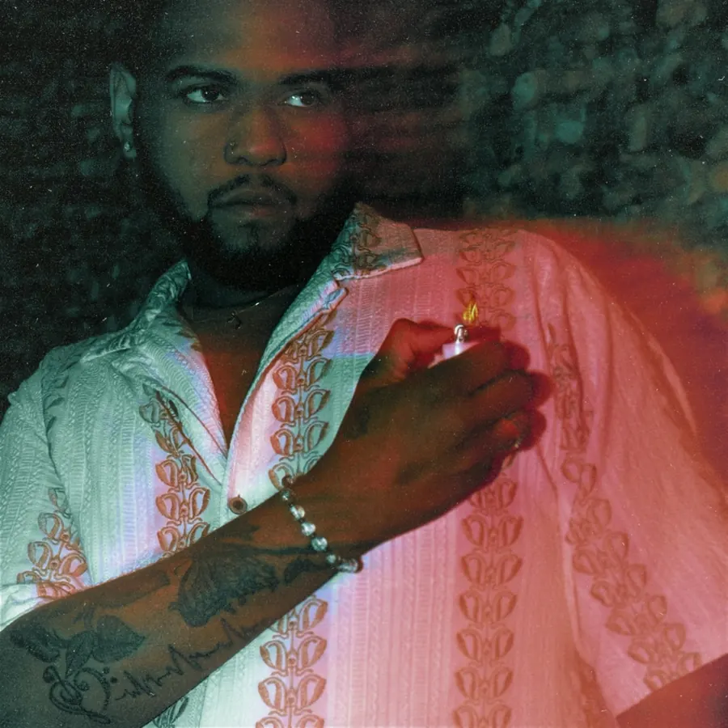
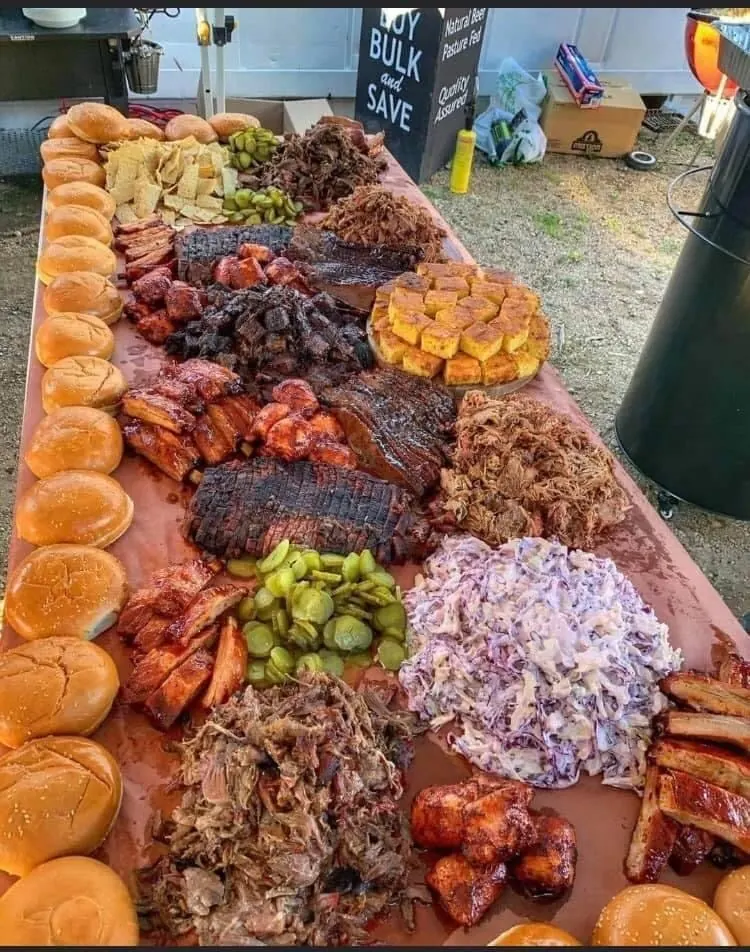

Where music meets flavor.

Born D’Andre Pyke and raised in Arlington, Texas, Chef Dee is a performer, vocalist and culinary creative.
He began cooking at nine and formally studied culinary arts through middle school, high school and the Culinary School of Fort Worth. That dual passion is the heart of his brand, The Taste Experience, where live performance and elevated dining collide.
On stage he is known for high-energy sets, genre-blending mashups and crowd engagement. He won Best Soul Vocalist at the Dallas Entertainment Awards, played for thousands at Levitt Pavilion and held a residency at the Shag Room inside Virgin Hotels Las Vegas, where he also won the venue’s Open Mic Finale.
He is inspired by his father, Darrell Pyke, whose voice uplifted everyone around him. The mission: create a space where the music moves you, the food brings you in, and the moment stays with you.

Curated dining.
From an intimate wedding to a curated private dinner, the same chef who leads the band can plan the table.